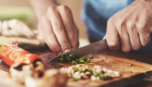
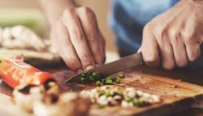

Nancy's Portfolio
about me
 

A non coding gal trying to get into coding all things. I truly enjoy the great outdoors and find joy in the simple pleasures of life. Whether it's exploring a scenic trail, soaking up the sun at the beach, or simply just walking outside my door to breath the fresh air. I also enjoy indulging in the diverse flavors of different cuisines. Cooking is a passion of mine, and I love experimenting with new recipes and ingredients from around the world. Road trips are one of my favorite ways to explore new places, and one of the most memorable journeys I’ve taken was driving from California to New York in just three days. The thrill of the open road and the excitement of discovering new destinations make every trip unforgettable. In addition to my hobbies, I have worked in the tech world for the last 10 years in various finance roles. My latest interest is in learning the world of coding in hopes to be able to pivot my career into a more technical role.
 >"
>" "
"